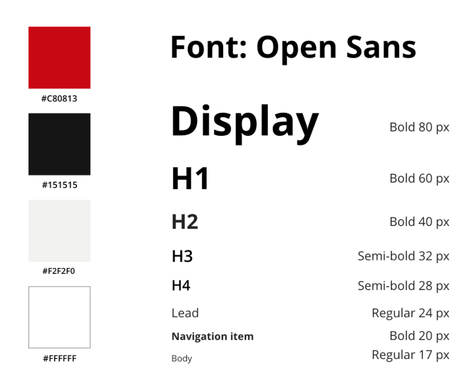
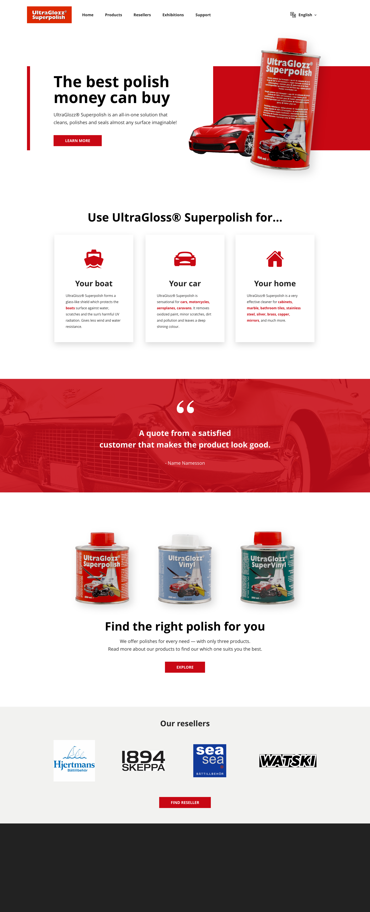
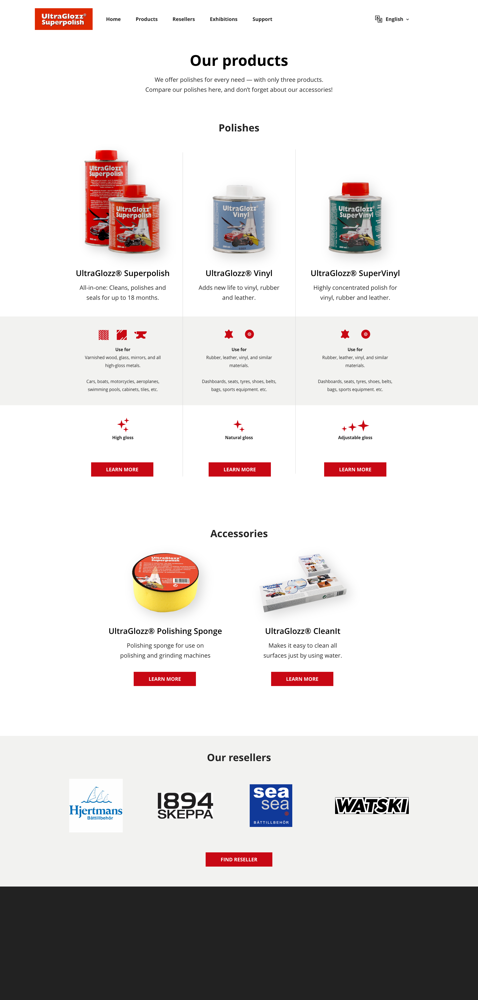
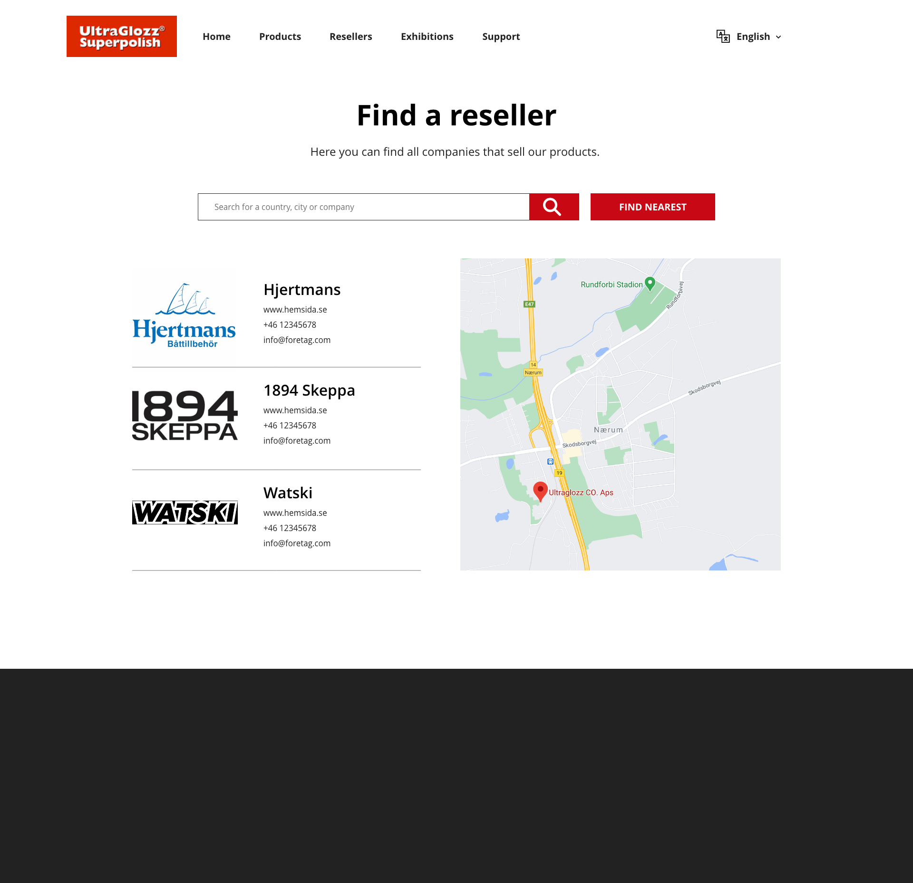
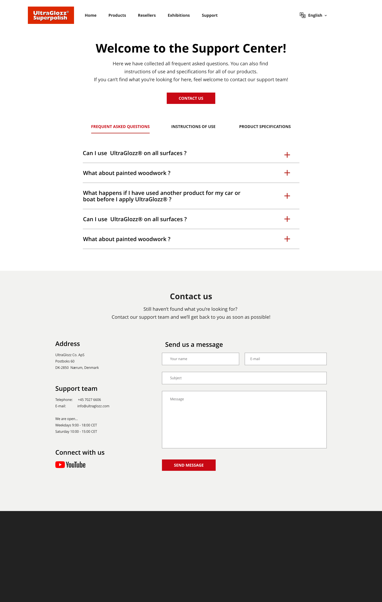

Background
Ultraglozz is a Danish company producing multi-use polishes and boat accessories. They are selling their products via resellers and on exhibitions, and not on their website. The purpose of their website is give information about their products and upcoming exhibitions, as well as a way for people to contact them. Visit their website here.
This project was done as a part of a course assignment and UltraGlozz has not been a part of the process. However, they have approved me using some of their material in this portfolio.
The problem
The current web design has several design issues that flaws the experience and overall usability of the website. Below is their landing page.

UltraGlozz's own design
There is no obvious part of the landing page that draws the users attention. The header is a big slide show of pictures that takes up room from the products, and the first information we get about the products are small pictures without any explaination. When looking for information about the site and company we get a long quote about money.
The newsletter sign-up does not entice interest, nor explains the advantages of signing up. Why should the user submit their e-mail? The latest news on the website are from four years ago, so what can we expect from this newsletter?
Moving on to language settings. Flags represent countries and would make sense if one where chosing their region because that would affect the products and/or support. However, in this case it only changes the language and therefore the flags are misleading. Common for the flags and navbar is that the active option is gray, making it look disabled rather than active.
UltraGlozz have three polishes and two polish related product, but they have put everything under "Superpolish" which is the name of their most popular polish. If we click "Superpolish" in the navbar, we get a long list of mixed items. The first eight are related to the Superpolish product, and the last four are other products. The hierachry is misleading and makes it difficult to navigate correctly.

UltraGlozz's own design of the dropdown menu from navbar
The items in the dropdown follows us to the product page for UltraGlozz Superpolish, as seen to the left in the screenshot below. However, it does not always contain the same items. The active item looked disabled in the navbar, and this time it looks like an input field. As previously mentioned, the first eight (now nine) items are related to the same product, but the information in them overlap each other. There is no distinct hierachry of the product information and it is not easy to find the information you are looking for.

UltraGlozz's own design of the product page for UltraGlozz superpolish
There is much more to say about the current design, but now it is time to move on to my solution!
My solution
I delimitated the scope of the project by only focusing on the polish products. This made the purpose of the website much clearer. I created a mock-up in Adobe XD and then implemented parts of the website with plain HTML, CSS and some JavaScript.

Mock-up of the new design
The process
Planning the content
After analysing UltraGlozz's own design, I made a plan for the new design. My main goal of the new design was to make the content easy to understand and the navigation intuitive. I wrote down what pages I wanted in the new design and what they should contain.
- The navbar will move to the top of the website in order to make more room for the page content. It will contain seven items: the logo, five pages, and language settings. The pages reachable from the navbar will be Home, Products, Resellers, Exhibitions and Support. Many modern websites do not have a Home button, but instead use the logo as the link to Home. However, since UltraGlozz has older consumers, I chose to have a Home link in the navbar so it will be easy to find.
- The home page should make the user understand what the company does rigth away. It will focus on their main product: UltraGlozz Superpolish, but also show that they have other polishes as well. I also want the user to get intrigued, so I want a Call to Action taking the user to the UltraGlozz Superpolish product page.
- A problem in the current website is that it is difficult to get a overview of their polishes and understand the difference between them. On the product page I want to make it easy to find all polishes and compare them.
- On the product page for a single product, the user should be able the find the information they are looking for in no time. There should be an intro with a product summary, and if the user want to learn more they can scroll to learn more.
- When the user is looking for a place to buy a product from UltraGlozz, they should be able to search for companies and/or locations. This will be a function on the reseller page.
- On the exhibition page the user can find upcoming exhibitions.
- The support page will be a place where the user can find all documentation and FAQ's for their products, and also contact the company.
- The newletter will be moved to the footer, together with company info and social medias.
Paper sketches
Before starting in Adobe XD I did some quick sketches on paper, just to have some reference on what the designs should contain.
Paper sketches
Wireframes
The next step was to make wireframes. This was made in Adobe XD. I also made mobile versions but below I only show the desktop versions.
Wireframes
Fonts and colors
UltraGlozz's color is red, and therefore the website will have a red primary color (something I will talk about again in the discussion). The strong color will be complemented with neutral colors. I want a modern and simple look of the website, and the texts should be easy to read. I chose Open Sans as font because it is modern and a bit playful, but without being unserious. Below is the font sizes I went with in the mock-up, but this how well the font with size 80 px went when I implemented the design will be discussed later...
Fonts and colors of the design
The result
Home page
The scrollable home page makes it effortless for the user to get more information and allows more and intriguing paths leading to other pages. It is obvious what the company does and the user are immediately introduced to their best selling product. The language settings now focus on the language rather than countries. The buttons no longer have any corner radius, to give the website a more serious feeling. The footer is not designed yet.
Mock-up of home page
Products page
The products page has gotten a new look since the wireframes. Now it is easier for the user to compare the products and understand what differs between them.
Mock-up of products page
Single product page
The page for a single product begins with a summary and some quick facts. If the user scroll on they can read about the usages of the product. They also get both a video and a written step by step guide on how to use it. If the user wants to learn even more, they can navigate between the tabs with FAQs, detailed intructions of use and product specification. By now they probably wonder where they can get this product, and then they see the reseller section with featured companies.

Mock-up of Ultraglozz Superpolish product page
Resellers page
The user can serach for companies or locations and get suggestions of resellers. They can also quick search by using "find nearest" and location services.
Mock-up of resellers page
Support page
On the support page the user can find FAQs, product documentation and contact info. The FAQs showing here are only placeholders. It is supposed to be both general and product specific questions. Placing the contact info on the bottom of the page makes the user more likely to find their answer in some of the tabs first. However, there is a button on the top of the page that scrolls down the user to the contact info section. The user gets multiple ways to contact the company, and also knows when the support team is working.
Mock-up of support page
Discussion and lessons learnt
This was the first website I designed and actually implemented. The first thing I noticed when I started coding and actually seeing the design in a browser was the font sizes. The gap from 17 to 80px was huge and made the design feel inconsistent. For example, the step by step guide under the instructions video has a very small font size compared to the rest of the design. When implementing the design, I made the largest fonts smaller. The artboards in Adobe XD were 1920px wide, which made me believe I hade much more space than you actually have on most devices.
The main color of the website is red. This is the company's main color, so it makes sense to use it, but at the same time it is a color that is associated with warnings. It would probably make the website friendlier if more neutral colors were used.
If I had more time working on the design I would spend most of it on the products and single product page. The accessories section feels a bit awkwardly placed. I would also redesign the cars,boats and home sections on the single product page, making it look less graphical and instead more technical.
Conclusion
The new design has a modern look that is easy to navigate in. My goal was to make is easy for the users to understand the purpose of the company and their products, which I think I succeeded with. However, this was my first webdesign that I actually implemented, and I made many rookie mistakes that I learnt from.